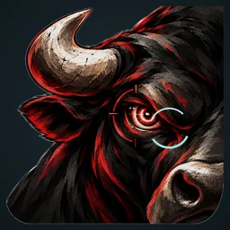
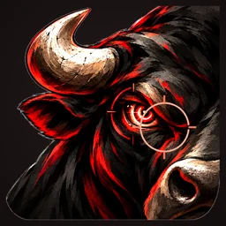
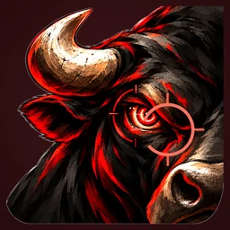
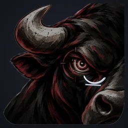
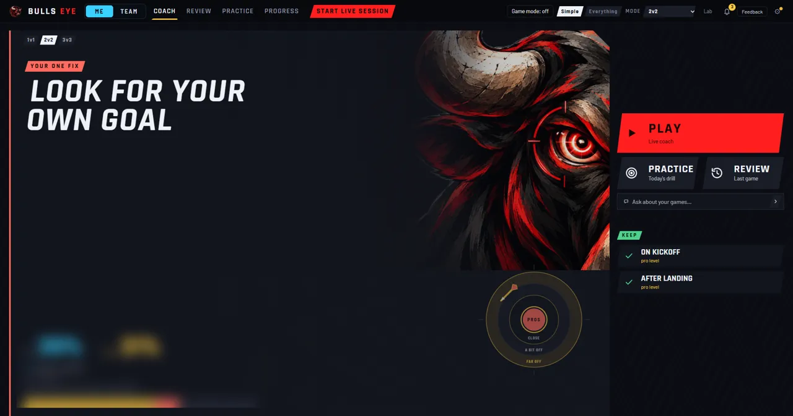
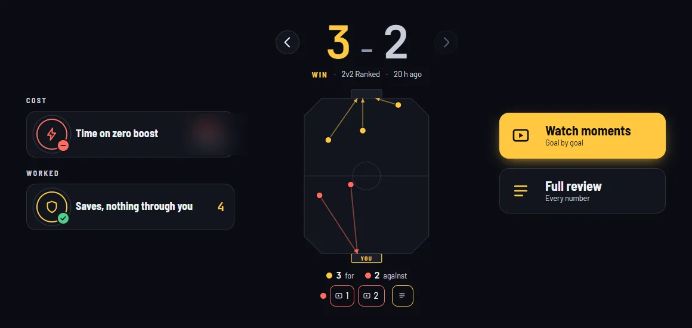
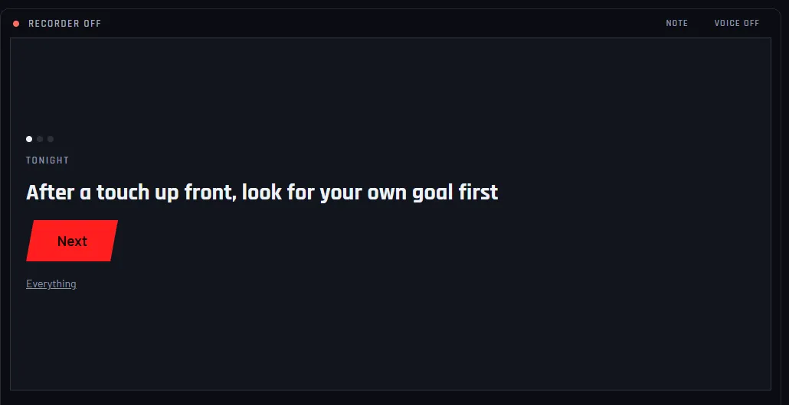

How it worksSå funkar det
Install
Installera
Download the Windows installer and run it.
Ladda ner installationsprogrammet och kör det.
Play
Spela
Play Rocket League as usual. Bullseye reads your replays.
Spela som vanligt. Bullseye läser dina replays.
Improve
Bli bättre
Get a tip on each goal against, then practise what matters.
Få ett tips på varje insläppt mål och träna på det som spelar roll.
What it doesVad den gör
A tip on every goal against
Ett tips efter varje insläppt mål
After a match, each goal you conceded gets a short, calm tip on what to try next time.
Efter matchen får varje insläppt mål ett kort, lugnt tips om vad du kan prova nästa gång.
Live coach + “Said” tab
Live-coach + fliken “Said”
Short spoken-style hints while you play, and a tab where you can read everything the coach said.
Korta tips medan du spelar, och en flik där du kan läsa allt coachen sagt.
Guided practice
Guidad träning
Practice steps picked from what you actually struggle with.
Träningssteg valda utifrån det du faktiskt har svårt med.
Car-control & air-roll drills
Bilkontroll & air-roll-övningar
Drills for car control and air roll, so the basics get solid.
Övningar för bilkontroll och air roll så att grunderna sitter.
My goal
Mitt mål
Pick what you want to improve and the coaching follows it.
Välj vad du vill bli bättre på så följer coachningen det.
My plan
Min plan
Up to three things to work on this week, picked from your analysed games: the moments just before you lost a contested ball. Each comes with a tip and a drill. These are links found in your own games, not proof. Pick 10, 20, 30 or 45 minutes a day.
Upp till tre saker att jobba på den här veckan, valda från dina analyserade matcher: ögonblicken precis innan du förlorade en boll. Varje kommer med ett tips och en övning. Det är samband i dina egna matcher, inget bevis. Välj 10, 20, 30 eller 45 minuter om dagen.
Today's session
Dagens pass
A short numbered list from your plan: a warm-up, the main work, one mechanic, a training pack, then a match against bots. Tick the day off when you're done.
En kort numrerad lista från din plan: uppvärmning, huvudövning, en mekanik, ett träningspack och sedan match mot bottar. Bocka av dagen när du är klar.
Mode-aware coaching
Anpassad efter spelläge
Advice that fits the playlist you play, not one-size-fits-all.
Råd som passar den spellista du spelar.




See itSe den
Screenshots from a test copy: player names are replaced and personal numbers blurred.
Skärmdumpar från en testkopia: spelarnamn är utbytta och personliga siffror suddade.

Coach: one fix to work on.
Coach: en sak att jobba på.

Review: what cost you, what worked, goal by goal.
Granska: vad kostade, vad funkade, mål för mål.

Live coach: one card between games.
Live-coach: ett kort mellan matcherna.
New in 1.8.1.92Nytt i 1.8.1.92
- Updates: checked again soon after your game, not hours later.
- Updates: a download pauses when Rocket League starts, then continues.
- Crash check: turning off your PC with Bullseye open isn't a crash.
- Dropshot replays are labelled as a mode Bullseye doesn't read, not retried.
- Uppdateringar: kollas igen strax efter din match, inte timmar senare.
- Uppdateringar: en nedladdning pausas när Rocket League startar och fortsätter sedan.
- Kraschkontroll: att stänga av datorn med Bullseye öppet räknas inte som en krasch.
- Dropshot-replays markeras som ett läge Bullseye inte läser, och försöks inte igen.
PlansPlaner
RequirementsKrav
- Windows PC
- Rocket League (the app works from your replays)
- Free – no account needed to download
- Windows-dator
- Rocket League (appen arbetar utifrån dina replays)
- Gratis – inget konto krävs för nedladdning
PrivacyIntegritet
This website has no trackers, ads or cookies. For details on exactly what the app sends, ask on Discord.
Webbplatsen har inga spårare, annonser eller cookies. Frågor om exakt vad appen skickar tas på Discord.
FAQ
Is it free?
Är den gratis?
Yes, the app is free to download and use today.
Ja, appen är gratis att ladda ner och använda idag.
Which systems does it run on?
Vilka system funkar den på?
Windows.
Windows.
Does it work for every mode?
Funkar den i alla spellägen?
Coaching is mode-aware, so advice fits the playlist you play.
Coachningen är anpassad efter spelläge.